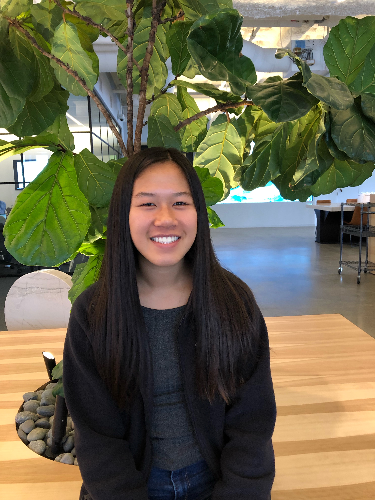

Hello I’m Emily and I am a rising junior at San Leandro High School! In this day and age, we use technology in our every day lives whether it is going on social media, using public transportation, or playing online games. All these application are written in code and by joining Girls Who Code, it would allow me to understand the evolvement of the technological world. My collection is called ANTI GREEN GREEN CLUB, which is a spin-off of the popular brand ANTI SOCIAL SOCIAL CLUB. Ironically, our brand is eco-friendly but by being anti-green, it meant giving little or no care towards saving the environment. The message behind this collection was to spread awareness towards conserving the environment and to lessen your carbon footprint in a funny way. You can do this by reducing your plastic waste, driving less, and buying more sustainable products.

Hey everyone! My name is Kaitlyn, and I am 15 years old! I joined girls who code because my older friends always told me about how fun their experiences were before and that just really made me want to do it! I made the 'Fanjay' collection to basically enable fans that unable to afford merchandise created by their favorite celebrities! More specifically, I created this collection because when I was younger, I would always be so bummed when I saw how expensive the merchandise made my favorite celebrities had costed. Thus, I met many others with the same problem and when we had the idea of making this online merchandise store, I immediately came up with the idea of making affordable fan merchandise for the biggest celebrities in the world! Enjoy!!! :')

Hello! I am Mindy and I am currently fifteen years old. I came into this Girls Who Code program to learn more about technology and the ways it has been implemented around the world. For my collection, I wanted to incorporate well-know designs, but put a twist of them because nowadays, people are so obsessed with obtaining the high-end brands without any reasoning behind it except for gaining clout. Therefore, my collection makes somewhat of a joke of all of these brands that people love by putting funny designs on them.
Hello! I am Mindy and I am currently fifteen years old. I came into this Girls Who Code program to learn more about technology and the ways it has been implemented around the world. For my collection, I wanted to incorporate well-know designs, but put a twist of them because nowadays, people are so obsessed with obtaining the high-end brands without any reasoning behind it except for gaining clout. Therefore, my collection makes somewhat of a joke of all of these brands that people love by putting funny designs on them.

Hello I am Tsering, I am 16 years old and I attend Albany High School. My passion for coding led me to this amazing program empowering girls in STEAM. My idea for my collection came to me from the meme of people wanting to raid Area 51. Raiding Area 51 was first a joke from a Facebook page created by Matty Roberts, the page ended by going vial which led to 1.6 million people “going” and 1.2 million are “interested”. With this Facebook page going vial and getting attention from a lot news channels was extremely funny to me and I wanted to extend the humor by creating merchandise for the event.

Hi my name is Kendall! I am going to be a junior at San Ramon Valley High School. I decided to come to the Girls Who Code Summer Immersion Program to learn about computer science and pursue my passion for technology. Through the program I discovered my passion towards web development using HTML, CSS, and JavaScript. My collection was inspired by using faces to make others happy. My collection aims to bring smiles to everyone who sees the clothing. My collection will make you feel happy and will always brighten your day! I hope you enjoy